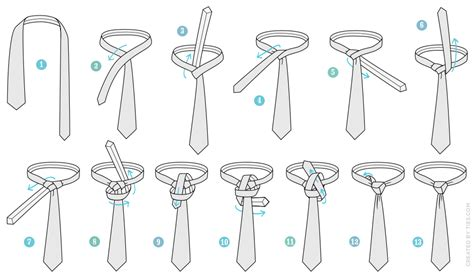
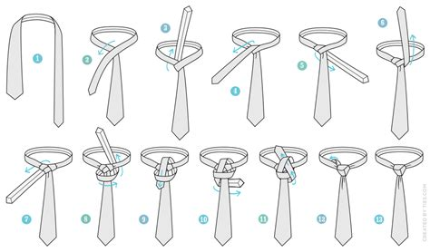

About Us
This is the half windsor knot, one of the easiest to tie, though it is less formal compared to other knots.

The trinity knot is one of the more simple knots that has a different look to it, and will be sure to impress.
This is the half windsor knot, one of the easiest to tie, though it is less formal compared to other knots.
The trinity knot is one of the more simple knots that has a different look to it, and will be sure to impress.
